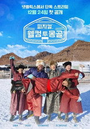
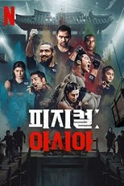
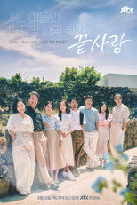

넷플릭스 예능107편 중 인기 60편
순서: 넷플릭스 한국 TOP10 에 든 작품을 먼저(최근에 든 순), 그다음은 TMDB 전 세계 인기도 순입니다 — 넷플릭스 외 서비스는 공식 순위를 공개하지 않습니다. 제공처는 JustWatch 자료(2026-09-24 확인)이며 가입 전 서비스에서 최종 확인하세요. 넷플릭스 요금·할인 →
1 나는 SOLO I am Solo시리즈 · 2021 · 예능 · 웨이브, 왓챠, 티빙에도넷플릭스 한국 최고 1위2
나는 SOLO I am Solo시리즈 · 2021 · 예능 · 웨이브, 왓챠, 티빙에도넷플릭스 한국 최고 1위2 나는 SOLO, 그 후 사랑은 계속된다 I'm SOLO, Love goes on시리즈 · 2022 · 예능 · 웨이브, 왓챠, 티빙에도넷플릭스 한국 최고 3위3
나는 SOLO, 그 후 사랑은 계속된다 I'm SOLO, Love goes on시리즈 · 2022 · 예능 · 웨이브, 왓챠, 티빙에도넷플릭스 한국 최고 3위3 피지컬 100: 이탈리아 Physical 100: Italy시리즈 · 2026 · 예능넷플릭스 한국 최고 9위4
피지컬 100: 이탈리아 Physical 100: Italy시리즈 · 2026 · 예능넷플릭스 한국 최고 9위4 비서진 My Secretary시리즈 · 2025 · 예능 · 코미디넷플릭스 한국 최고 3위5
비서진 My Secretary시리즈 · 2025 · 예능 · 코미디넷플릭스 한국 최고 3위5 불량 연애 Badly in Love시리즈 · 2025 · 예능넷플릭스 한국 최고 4위6
불량 연애 Badly in Love시리즈 · 2025 · 예능넷플릭스 한국 최고 4위6 대체 등산을 왜 하는 건데? Take a Hike!시리즈 · 2026 · 예능넷플릭스 한국 최고 5위7
대체 등산을 왜 하는 건데? Take a Hike!시리즈 · 2026 · 예능넷플릭스 한국 최고 5위7 나의 AI 파트너 - 기이안 연애 My AI Partner - Strange Love시리즈 · 2026 · 예능넷플릭스 한국 최고 10위8
나의 AI 파트너 - 기이안 연애 My AI Partner - Strange Love시리즈 · 2026 · 예능넷플릭스 한국 최고 10위8 틈만나면, Whenever Possible시리즈 · 2024 · 예능 · 왓챠에도넷플릭스 한국 최고 7위9
틈만나면, Whenever Possible시리즈 · 2024 · 예능 · 왓챠에도넷플릭스 한국 최고 7위9 모태솔로 애프터서비스 Better Late Than Single: After Service시리즈 · 2026 · 예능넷플릭스 한국 최고 5위10
모태솔로 애프터서비스 Better Late Than Single: After Service시리즈 · 2026 · 예능넷플릭스 한국 최고 5위10 모태솔로지만 연애는 하고 싶어 Better Late Than Single시리즈 · 2025 · 예능넷플릭스 한국 최고 1위11
모태솔로지만 연애는 하고 싶어 Better Late Than Single시리즈 · 2025 · 예능넷플릭스 한국 최고 1위11 자식방생프로젝트 합숙 맞선 Match to Marry: With Parents시리즈 · 2026 · 예능넷플릭스 한국 최고 4위12
자식방생프로젝트 합숙 맞선 Match to Marry: With Parents시리즈 · 2026 · 예능넷플릭스 한국 최고 4위12 유재석 캠프 Jae-seok's B&B Rules!시리즈 · 2026 · 예능 · 코미디넷플릭스 한국 최고 1위13
유재석 캠프 Jae-seok's B&B Rules!시리즈 · 2026 · 예능 · 코미디넷플릭스 한국 최고 1위13 쯔양몇끼 Still Hungry시리즈 · 2026 · 예능 · 웨이브, 왓챠, 티빙에도넷플릭스 한국 최고 7위14
쯔양몇끼 Still Hungry시리즈 · 2026 · 예능 · 웨이브, 왓챠, 티빙에도넷플릭스 한국 최고 7위14 최후의 인류 The Last Humanity시리즈 · 2026 · 예능 · 왓챠, 티빙에도넷플릭스 한국 최고 6위15
최후의 인류 The Last Humanity시리즈 · 2026 · 예능 · 왓챠, 티빙에도넷플릭스 한국 최고 6위15 법륜로드: 스님과 손님 Sunim & Sonim: Soul Trip in India시리즈 · 2026 · 예능넷플릭스 한국 최고 4위16
법륜로드: 스님과 손님 Sunim & Sonim: Soul Trip in India시리즈 · 2026 · 예능넷플릭스 한국 최고 4위16 미친맛집: 미식가 친구의 맛집 K-foodie meets J-foodie시리즈 · 2025 · 예능넷플릭스 한국 최고 1위17
미친맛집: 미식가 친구의 맛집 K-foodie meets J-foodie시리즈 · 2025 · 예능넷플릭스 한국 최고 1위17 연애기숙학교 돌싱N모솔 Romance School : First & Again시리즈 · 2026 · 예능 · 웨이브, 왓챠, 티빙에도넷플릭스 한국 최고 6위18
연애기숙학교 돌싱N모솔 Romance School : First & Again시리즈 · 2026 · 예능 · 웨이브, 왓챠, 티빙에도넷플릭스 한국 최고 6위18 최강로드 식포일러 Chefs’ Secrets of K-food시리즈 · 2026 · 예능넷플릭스 한국 최고 6위19
최강로드 식포일러 Chefs’ Secrets of K-food시리즈 · 2026 · 예능넷플릭스 한국 최고 6위19 용감한 형사들 Brave Detectives시리즈 · 2022 · 범죄 · 예능 · 웨이브, 왓챠, 티빙에도넷플릭스 한국 최고 4위20
용감한 형사들 Brave Detectives시리즈 · 2022 · 범죄 · 예능 · 웨이브, 왓챠, 티빙에도넷플릭스 한국 최고 4위20 이서진의 달라달라 Ready or Not: Texas시리즈 · 2026 · 예능넷플릭스 한국 최고 1위21
이서진의 달라달라 Ready or Not: Texas시리즈 · 2026 · 예능넷플릭스 한국 최고 1위21 Ed & Ryu: 열두바다 Ed & Ryu: Mad About Seafood시리즈 · 2026 · 다큐멘터리 · 예능넷플릭스 한국 최고 10위22
Ed & Ryu: 열두바다 Ed & Ryu: Mad About Seafood시리즈 · 2026 · 다큐멘터리 · 예능넷플릭스 한국 최고 10위22 이혼숙려캠프 Divorce Re-Boot Camp시리즈 · 2024 · 예능 · 웨이브, 왓챠, 티빙에도넷플릭스 한국 최고 4위23
이혼숙려캠프 Divorce Re-Boot Camp시리즈 · 2024 · 예능 · 웨이브, 왓챠, 티빙에도넷플릭스 한국 최고 4위23 미스터리 수사단 Agents of Mystery시리즈 · 2024 · 예능넷플릭스 한국 최고 2위24
미스터리 수사단 Agents of Mystery시리즈 · 2024 · 예능넷플릭스 한국 최고 2위24 천하제빵: 베이크 유어 드림 Bake Your Dream시리즈 · 2026 · 예능 · 웨이브, 티빙에도넷플릭스 한국 최고 4위25솔로지옥 리유니언 Single's Inferno Reunion시리즈 · 2026 · 예능넷플릭스 한국 최고 2위26일병 김원훈: 보직의 세계 Sergeant Kim at Military시리즈 · 2026 · 예능넷플릭스 한국 최고 2위27
천하제빵: 베이크 유어 드림 Bake Your Dream시리즈 · 2026 · 예능 · 웨이브, 티빙에도넷플릭스 한국 최고 4위25솔로지옥 리유니언 Single's Inferno Reunion시리즈 · 2026 · 예능넷플릭스 한국 최고 2위26일병 김원훈: 보직의 세계 Sergeant Kim at Military시리즈 · 2026 · 예능넷플릭스 한국 최고 2위27 솔로지옥 Single’s Inferno시리즈 · 2021 · 예능 · 코미디넷플릭스 한국 최고 1위28
솔로지옥 Single’s Inferno시리즈 · 2021 · 예능 · 코미디넷플릭스 한국 최고 1위28 아니 근데 진짜! uh, but like, seriously!시리즈 · 2026 · 예능 · 코미디넷플릭스 한국 최고 6위29
아니 근데 진짜! uh, but like, seriously!시리즈 · 2026 · 예능 · 코미디넷플릭스 한국 최고 6위29 흑백요리사: 요리 계급 전쟁 Culinary Class Wars시리즈 · 2024 · 예능넷플릭스 한국 최고 1위30
흑백요리사: 요리 계급 전쟁 Culinary Class Wars시리즈 · 2024 · 예능넷플릭스 한국 최고 1위30 케냐 간 세끼 Three Idiots in Kenya시리즈 · 2025 · 예능넷플릭스 한국 최고 1위32
케냐 간 세끼 Three Idiots in Kenya시리즈 · 2025 · 예능넷플릭스 한국 최고 1위32 야구여왕 Baseball Queen시리즈 · 2025 · 예능 · 디즈니+, 웨이브, 티빙에도넷플릭스 한국 최고 5위33
야구여왕 Baseball Queen시리즈 · 2025 · 예능 · 디즈니+, 웨이브, 티빙에도넷플릭스 한국 최고 5위33 우리들의 발라드 The Ballad of Us시리즈 · 2025 · 예능넷플릭스 한국 최고 4위35마이턴 My Turn시리즈 · 2025 · 예능넷플릭스 한국 최고 10위36
우리들의 발라드 The Ballad of Us시리즈 · 2025 · 예능넷플릭스 한국 최고 4위35마이턴 My Turn시리즈 · 2025 · 예능넷플릭스 한국 최고 10위36 돌싱글즈 Love After Divorce시리즈 · 2021 · 예능 · 웨이브, 왓챠에도넷플릭스 한국 최고 2위37옷장전쟁 Closet Battle시리즈 · 2025 · 예능넷플릭스 한국 최고 10위38
돌싱글즈 Love After Divorce시리즈 · 2021 · 예능 · 웨이브, 왓챠에도넷플릭스 한국 최고 2위37옷장전쟁 Closet Battle시리즈 · 2025 · 예능넷플릭스 한국 최고 10위38 태어난 김에 세계일주 Adventure by Accident시리즈 · 2022 · 예능 · 웨이브, 티빙에도넷플릭스 한국 최고 2위39장도바리바리 Getaway and Go with Jangdobari시리즈 · 2025 · 예능 · 코미디넷플릭스 한국 최고 6위40
태어난 김에 세계일주 Adventure by Accident시리즈 · 2022 · 예능 · 웨이브, 티빙에도넷플릭스 한국 최고 2위39장도바리바리 Getaway and Go with Jangdobari시리즈 · 2025 · 예능 · 코미디넷플릭스 한국 최고 6위40 데블스 플랜 The Devil's Plan시리즈 · 2023 · 예능넷플릭스 한국 최고 1위41
데블스 플랜 The Devil's Plan시리즈 · 2023 · 예능넷플릭스 한국 최고 1위41 대환장 기안장 Kian’s Bizarre B&B시리즈 · 2025 · 예능넷플릭스 한국 최고 2위42
대환장 기안장 Kian’s Bizarre B&B시리즈 · 2025 · 예능넷플릭스 한국 최고 2위42 지구마불 세계여행 World Dice Tour시리즈 · 2023 · 예능 · 다큐멘터리 · 티빙에도넷플릭스 한국 최고 3위43도라이버 Screwballs시리즈 · 2025 · 예능 · 코미디넷플릭스 한국 최고 2위44주관식당 The Blank Menu for You시리즈 · 2025 · 예능넷플릭스 한국 최고 8위45추라이 추라이 Try? Choo-ry!시리즈 · 2025 · 예능넷플릭스 한국 최고 7위46
지구마불 세계여행 World Dice Tour시리즈 · 2023 · 예능 · 다큐멘터리 · 티빙에도넷플릭스 한국 최고 3위43도라이버 Screwballs시리즈 · 2025 · 예능 · 코미디넷플릭스 한국 최고 2위44주관식당 The Blank Menu for You시리즈 · 2025 · 예능넷플릭스 한국 최고 8위45추라이 추라이 Try? Choo-ry!시리즈 · 2025 · 예능넷플릭스 한국 최고 7위46 백종원의 레미제라블 Paik's Les Misérables시리즈 · 2024 · 예능 · 웨이브에도넷플릭스 한국 최고 5위47
백종원의 레미제라블 Paik's Les Misérables시리즈 · 2024 · 예능 · 웨이브에도넷플릭스 한국 최고 5위47 기안이쎄오 Kian is CEO시리즈 · 2024 · 예능 · 웨이브, 왓챠, 티빙에도넷플릭스 한국 최고 10위48
기안이쎄오 Kian is CEO시리즈 · 2024 · 예능 · 웨이브, 왓챠, 티빙에도넷플릭스 한국 최고 10위48 최강럭비: 죽거나 승리하거나 Rugged Rugby: Conquer or Die시리즈 · 2024 · 예능넷플릭스 한국 최고 7위49
최강럭비: 죽거나 승리하거나 Rugged Rugby: Conquer or Die시리즈 · 2024 · 예능넷플릭스 한국 최고 7위49 좀비버스 Zombieverse시리즈 · 2023 · 예능넷플릭스 한국 최고 3위50
좀비버스 Zombieverse시리즈 · 2023 · 예능넷플릭스 한국 최고 3위50 코미디 리벤지 Comedy Revenge시리즈 · 2024 · 예능 · 코미디넷플릭스 한국 최고 4위51신인가수 조정석 A-List to Playlist시리즈 · 2024 · 예능넷플릭스 한국 최고 4위52
코미디 리벤지 Comedy Revenge시리즈 · 2024 · 예능 · 코미디넷플릭스 한국 최고 4위51신인가수 조정석 A-List to Playlist시리즈 · 2024 · 예능넷플릭스 한국 최고 4위52 태어난 김에 음악일주 Music Adventure by Accident시리즈 · 2024 · 예능 · 웨이브에도넷플릭스 한국 최고 4위53
태어난 김에 음악일주 Music Adventure by Accident시리즈 · 2024 · 예능 · 웨이브에도넷플릭스 한국 최고 4위53 고딩엄빠 Teenage Parents시리즈 · 2022 · 예능 · 웨이브, 왓챠에도넷플릭스 한국 최고 6위55
고딩엄빠 Teenage Parents시리즈 · 2022 · 예능 · 웨이브, 왓챠에도넷플릭스 한국 최고 6위55 최강야구 A Clean Sweep시리즈 · 2022 · 예능 · 웨이브, 왓챠, 티빙에도넷플릭스 한국 최고 3위56슈퍼리치 이방인 Super Rich in Korea시리즈 · 2024 · 예능넷플릭스 한국 최고 5위57
최강야구 A Clean Sweep시리즈 · 2022 · 예능 · 웨이브, 왓챠, 티빙에도넷플릭스 한국 최고 3위56슈퍼리치 이방인 Super Rich in Korea시리즈 · 2024 · 예능넷플릭스 한국 최고 5위57 피지컬: 100 Physical: 100시리즈 · 2023 · 예능넷플릭스 한국 최고 1위58
피지컬: 100 Physical: 100시리즈 · 2023 · 예능넷플릭스 한국 최고 1위58 성+인물: 네덜란드, 독일 편 Risqué Business: The Netherlands and Germany시리즈 · 2024 · 예능넷플릭스 한국 최고 2위59
성+인물: 네덜란드, 독일 편 Risqué Business: The Netherlands and Germany시리즈 · 2024 · 예능넷플릭스 한국 최고 2위59 짜장면 랩소디 Jjajangmyeon Rhapsody시리즈 · 2024 · 예능 · 다큐멘터리넷플릭스 한국 최고 2위60
짜장면 랩소디 Jjajangmyeon Rhapsody시리즈 · 2024 · 예능 · 다큐멘터리넷플릭스 한국 최고 2위60 코미디 로얄 Comedy Royale시리즈 · 2023 · 예능 · 코미디넷플릭스 한국 최고 2위
코미디 로얄 Comedy Royale시리즈 · 2023 · 예능 · 코미디넷플릭스 한국 최고 2위
나는 SOLO I am Solo시리즈 · 2021 · 예능 · 웨이브, 왓챠, 티빙에도넷플릭스 한국 최고 1위2나는 SOLO, 그 후 사랑은 계속된다 I'm SOLO, Love goes on시리즈 · 2022 · 예능 · 웨이브, 왓챠, 티빙에도넷플릭스 한국 최고 3위3피지컬 100: 이탈리아 Physical 100: Italy시리즈 · 2026 · 예능넷플릭스 한국 최고 9위4비서진 My Secretary시리즈 · 2025 · 예능 · 코미디넷플릭스 한국 최고 3위5불량 연애 Badly in Love시리즈 · 2025 · 예능넷플릭스 한국 최고 4위6대체 등산을 왜 하는 건데? Take a Hike!시리즈 · 2026 · 예능넷플릭스 한국 최고 5위7나의 AI 파트너 - 기이안 연애 My AI Partner - Strange Love시리즈 · 2026 · 예능넷플릭스 한국 최고 10위8틈만나면, Whenever Possible시리즈 · 2024 · 예능 · 왓챠에도넷플릭스 한국 최고 7위9모태솔로 애프터서비스 Better Late Than Single: After Service시리즈 · 2026 · 예능넷플릭스 한국 최고 5위10모태솔로지만 연애는 하고 싶어 Better Late Than Single시리즈 · 2025 · 예능넷플릭스 한국 최고 1위11자식방생프로젝트 합숙 맞선 Match to Marry: With Parents시리즈 · 2026 · 예능넷플릭스 한국 최고 4위12유재석 캠프 Jae-seok's B&B Rules!시리즈 · 2026 · 예능 · 코미디넷플릭스 한국 최고 1위13쯔양몇끼 Still Hungry시리즈 · 2026 · 예능 · 웨이브, 왓챠, 티빙에도넷플릭스 한국 최고 7위14최후의 인류 The Last Humanity시리즈 · 2026 · 예능 · 왓챠, 티빙에도넷플릭스 한국 최고 6위15법륜로드: 스님과 손님 Sunim & Sonim: Soul Trip in India시리즈 · 2026 · 예능넷플릭스 한국 최고 4위16미친맛집: 미식가 친구의 맛집 K-foodie meets J-foodie시리즈 · 2025 · 예능넷플릭스 한국 최고 1위17연애기숙학교 돌싱N모솔 Romance School : First & Again시리즈 · 2026 · 예능 · 웨이브, 왓챠, 티빙에도넷플릭스 한국 최고 6위18최강로드 식포일러 Chefs’ Secrets of K-food시리즈 · 2026 · 예능넷플릭스 한국 최고 6위19용감한 형사들 Brave Detectives시리즈 · 2022 · 범죄 · 예능 · 웨이브, 왓챠, 티빙에도넷플릭스 한국 최고 4위20이서진의 달라달라 Ready or Not: Texas시리즈 · 2026 · 예능넷플릭스 한국 최고 1위21Ed & Ryu: 열두바다 Ed & Ryu: Mad About Seafood시리즈 · 2026 · 다큐멘터리 · 예능넷플릭스 한국 최고 10위22이혼숙려캠프 Divorce Re-Boot Camp시리즈 · 2024 · 예능 · 웨이브, 왓챠, 티빙에도넷플릭스 한국 최고 4위23미스터리 수사단 Agents of Mystery시리즈 · 2024 · 예능넷플릭스 한국 최고 2위24천하제빵: 베이크 유어 드림 Bake Your Dream시리즈 · 2026 · 예능 · 웨이브, 티빙에도넷플릭스 한국 최고 4위25솔로지옥 리유니언 Single's Inferno Reunion시리즈 · 2026 · 예능넷플릭스 한국 최고 2위26일병 김원훈: 보직의 세계 Sergeant Kim at Military시리즈 · 2026 · 예능넷플릭스 한국 최고 2위27솔로지옥 Single’s Inferno시리즈 · 2021 · 예능 · 코미디넷플릭스 한국 최고 1위28아니 근데 진짜! uh, but like, seriously!시리즈 · 2026 · 예능 · 코미디넷플릭스 한국 최고 6위29흑백요리사: 요리 계급 전쟁 Culinary Class Wars시리즈 · 2024 · 예능넷플릭스 한국 최고 1위30
피지컬: 웰컴 투 몽골 Physical: Welcome to Mongolia시리즈 · 2025 · 예능넷플릭스 한국 최고 7위31케냐 간 세끼 Three Idiots in Kenya시리즈 · 2025 · 예능넷플릭스 한국 최고 1위32야구여왕 Baseball Queen시리즈 · 2025 · 예능 · 디즈니+, 웨이브, 티빙에도넷플릭스 한국 최고 5위33
피지컬: 아시아 Physical: Asia시리즈 · 2025 · 예능넷플릭스 한국 최고 2위34우리들의 발라드 The Ballad of Us시리즈 · 2025 · 예능넷플릭스 한국 최고 4위35마이턴 My Turn시리즈 · 2025 · 예능넷플릭스 한국 최고 10위36돌싱글즈 Love After Divorce시리즈 · 2021 · 예능 · 웨이브, 왓챠에도넷플릭스 한국 최고 2위37옷장전쟁 Closet Battle시리즈 · 2025 · 예능넷플릭스 한국 최고 10위38태어난 김에 세계일주 Adventure by Accident시리즈 · 2022 · 예능 · 웨이브, 티빙에도넷플릭스 한국 최고 2위39장도바리바리 Getaway and Go with Jangdobari시리즈 · 2025 · 예능 · 코미디넷플릭스 한국 최고 6위40데블스 플랜 The Devil's Plan시리즈 · 2023 · 예능넷플릭스 한국 최고 1위41대환장 기안장 Kian’s Bizarre B&B시리즈 · 2025 · 예능넷플릭스 한국 최고 2위42지구마불 세계여행 World Dice Tour시리즈 · 2023 · 예능 · 다큐멘터리 · 티빙에도넷플릭스 한국 최고 3위43도라이버 Screwballs시리즈 · 2025 · 예능 · 코미디넷플릭스 한국 최고 2위44주관식당 The Blank Menu for You시리즈 · 2025 · 예능넷플릭스 한국 최고 8위45추라이 추라이 Try? Choo-ry!시리즈 · 2025 · 예능넷플릭스 한국 최고 7위46백종원의 레미제라블 Paik's Les Misérables시리즈 · 2024 · 예능 · 웨이브에도넷플릭스 한국 최고 5위47기안이쎄오 Kian is CEO시리즈 · 2024 · 예능 · 웨이브, 왓챠, 티빙에도넷플릭스 한국 최고 10위48최강럭비: 죽거나 승리하거나 Rugged Rugby: Conquer or Die시리즈 · 2024 · 예능넷플릭스 한국 최고 7위49좀비버스 Zombieverse시리즈 · 2023 · 예능넷플릭스 한국 최고 3위50코미디 리벤지 Comedy Revenge시리즈 · 2024 · 예능 · 코미디넷플릭스 한국 최고 4위51신인가수 조정석 A-List to Playlist시리즈 · 2024 · 예능넷플릭스 한국 최고 4위52태어난 김에 음악일주 Music Adventure by Accident시리즈 · 2024 · 예능 · 웨이브에도넷플릭스 한국 최고 4위53
끝사랑 Last Love시리즈 · 2024 · 예능 · 티빙에도넷플릭스 한국 최고 6위54고딩엄빠 Teenage Parents시리즈 · 2022 · 예능 · 웨이브, 왓챠에도넷플릭스 한국 최고 6위55최강야구 A Clean Sweep시리즈 · 2022 · 예능 · 웨이브, 왓챠, 티빙에도넷플릭스 한국 최고 3위56슈퍼리치 이방인 Super Rich in Korea시리즈 · 2024 · 예능넷플릭스 한국 최고 5위57피지컬: 100 Physical: 100시리즈 · 2023 · 예능넷플릭스 한국 최고 1위58성+인물: 네덜란드, 독일 편 Risqué Business: The Netherlands and Germany시리즈 · 2024 · 예능넷플릭스 한국 최고 2위59짜장면 랩소디 Jjajangmyeon Rhapsody시리즈 · 2024 · 예능 · 다큐멘터리넷플릭스 한국 최고 2위60코미디 로얄 Comedy Royale시리즈 · 2023 · 예능 · 코미디넷플릭스 한국 최고 2위